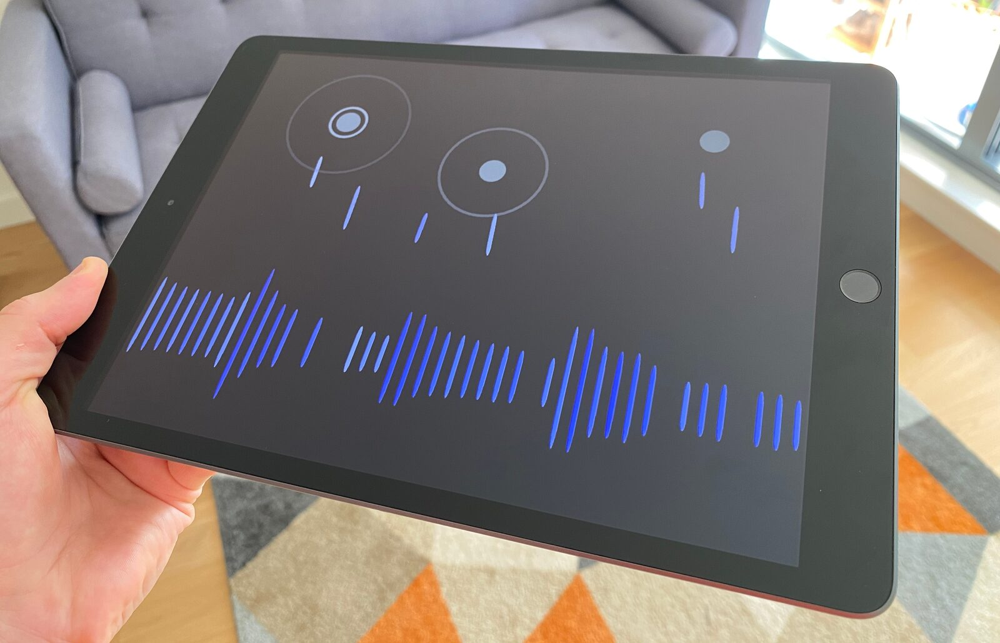
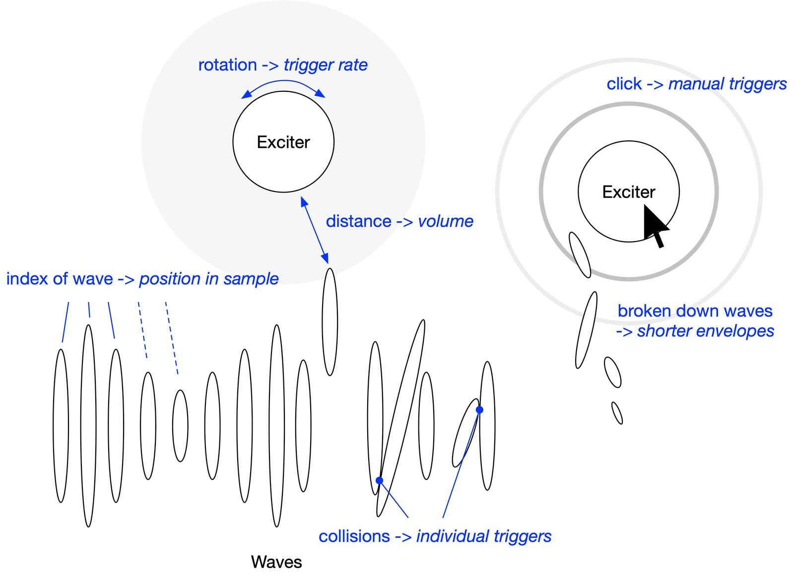
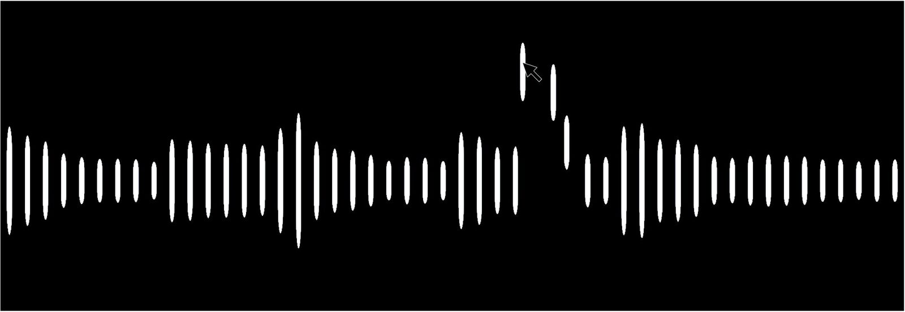
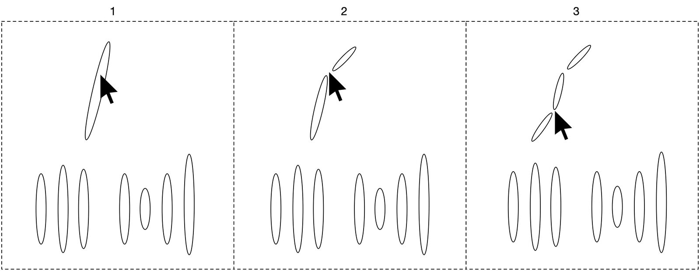
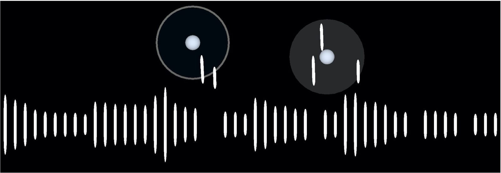
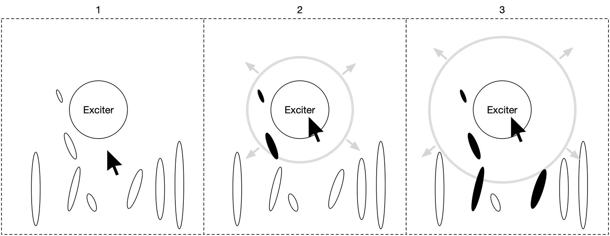

Debris: A playful interface for direct manipulation of audio waveforms
Abstract
Debris is a playful interface for direct manipulation of audio waveforms. Audio data is represented as a collection of waveform elements, which provide a low-resolution visualisation of the audio sample. Each element, however, can be individually examined, re-positioned, or broken down into smaller fragments, thereby becoming a tangible representation of a moment in the sample. Debris is built around the idea of looking at a sound not as a linear event to be played from beginning to end, but as a non-linear collection of moments, timbres, and sound fragments which can be explored, closely examined and interacted with. This paper positions the work among conceptually related NIME interfaces, details the various user interactions and their mappings and ends with a discussion around the interface’s constraints.
Author Keywords
2D, granular synthesis, interaction design, DMI, NIME
CCS Concepts
•Applied computing → Sound and music computing; Performing arts;
Motivation
The design of Debris is motivated by a desire to create interfaces that link UI experiences with synthesis engines in intuitive and unconventional ways in order to create new forms of sonic interactions. The interface discussed in the paper is built around two concepts in particular: transparent interactions and intuitive control metaphors.


Figure 1: Debris is a cross-platform interface for playful interaction with audio waveforms.
The importance and benefits of transparent musical interfaces, meaning interfaces that demonstrate clear cause-effect relationships, is well established among researchers in the NIME community [1][2][3][4]. Fels et al. state that interfaces are more expressive when their underlying behaviour and functionality is clearly understood by the performer [2]. Fyans et al. similarly emphasise the value of transparency, focusing on the importance of creating musical interfaces that can be easily understood by both performer and audience, rather than just the former [5][3].
Various works propose achieving this transparency through intuitive control metaphors. Lewis and Pestova propose a gestural typology for mixed electronic music, aiming to develop a vocabulary that can be used to create, as well as analyse musical works comprised of both acousmatic sound (sound without an originating cause) and live instruments. Their metaphors, also described as “physical-sonic gesture correspondences,” include actions like “scrape,” “push,” “agitate,” and “bow” [6]. Wessel and Wright present a range of control metaphors that can be intuitively understood by performers and audience members alike, with the aim of creating what the refer to as “control intimacy.” They propose the metaphors “drag and drop,” “scrubbing,” “dipping,” “catch and throw“ [7].
Debris, depicted in Figure 1, is a cross-platform interface based on these concepts of transparency and intuitive control metaphors. However, it places its focus on sound exploration rather than performance, as the interface is predominantly built around “point and click” interactions. It works with metaphors such as explore, disassemble, de/reconstruct, recombine, and fragment, and aims to provide a playful interface, loosely based on concepts in granular synthesis, that lets users view audio samples from a new perspective. Debris is built around the idea of looking at an audio sample not as a linear event to be played from beginning to end, but as a non-linear collection of moments, timbres, and sound fragments which can be explored, closely examined and interacted with. It does so by enabling a direct manipulation of audio waveforms which, to the author’s knowledge, has so far seen little exploration.
Related Work
The NIME community has created various interfaces, interactive systems, and performance tools that allow users to interact with audio material in visually engaging ways. This section will present a selection of projects that combine visual feedback and sonic interaction design in ways that encourage the exploration, curation, and audiovisual performance of sound material.
Carlson and Wang’s Borderlands is a cross-platform interface for composing and performing with granular synthesis [8]. Conceptually guided by various principles of Golan Levin’s painterly interfaces [9], the project aims for a direct interaction with audio content. The interface visualises grains in a close relation to the underlying sonic material, creating a clear audio-visual link between the two. Placing various sound sources and playback voices across what the authors call a “landscape of sounds” then allows users to assume various roles, including listener, performer, and curator. A perhaps even more literal and direct interaction with audio material can be found in Yerkes and Wright’s Twkyr, a multitouch waveform looper that lets users move between large- and small-scale temporal perspectives through zooming in and out of a waveform visualisation [10]. These sound fragments are then looped and can be pitched by the performer. Through its design, the interface allows for a seamless transition between sample player and wave table synthesiser. Yerkes and Wright emphasise the need for transparent electronic instruments and orient their interface design towards the visual language of Edward Tufte’s “data-ink” principles [11]. Anıl Çamcı’s GrainTrain is a multitouch musical interface for granular synthesis, built around hand-drawn waveform paths [12]. The cross-platform web application provides a visually engaging approach to real-time granular synthesis. Users can draw lines across a 2-dimensional surface, which then expand into waveform visualisations. Placing fingers or mouse pointers across these visualisations plays the corresponding audio material through a granulator. Combining multi-touch gestures with multiple samples distributed across the 2D space then allows for the creation and performance of complex soundscapes. Tarik Barri’s Versum is an audiovisual sequencing system which allows users to “compose in three dimensions” [13]. In a first step, the user creates a 3-dimensional environment, in which they place objects, or entities, which are virtual bodies that emit sound. These entities can then be assigned various timbral characteristics, and be put into gravitational orbits with each other. After this world-generation process is completed, the user enters a performance mode, where they can travel through the 3D environment and listen to their creation. During this, their position and movement relative to the sounding objects also influences the resulting soundscape.
Debris
The Debris interface is made up of two types of objects, which are referred to as Waves and Exciters. All interactions with the interface are performed by manipulating one or both of these elements. An overview of the interface is shown in Figure 1. A demonstration is available online.


Figure 2: A graphic showing the two interactive object types, Waves and Exciters, as well as their associated mappings to parameters of the audio engine.
Waves
Waves form the core element of the interface, simultaneously providing the visual representation of the sample that is being explored as well as interactive control over the sonic output. When a sample is loaded in, its audio content gets divided into 50 chunks which each get assigned to a Wave. All Waves together then provide a low-resolution visualisation of the audio sample and each Wave becomes a tangible representation of a moment within an audio sample.


Figure 3: A sample represented by 50 individual Waves, each of which is an object that can be repositioned and manipulated.
The initial position of a Wave along the x axis represents the location in the audio sample, while the height of the Wave is determined by the accumulated root mean square (RMS) of the sample chunks. Waves can be re-positioned via drag-and-drop, and have physical properties, meaning that if they are let go while being dragged, they continue their momentum for a while before coming to a halt again. This makes it possible for them to be thrown to collide with each other.
Individual Triggers
When two Waves collide, their audio contents are played back and their audio content serves as a sonic representation of the impact between the two objects. This means that the different moments and timbres within the sample interact with each other. Sound triggered by Wave collisions is pitched up by one octave and given a short, sharply decaying volume envelope, giving the sound fragments a percussive nature. The volume is determined by the velocity of the two Waves at the time of collision. As a result, forcefully throwing a Wave into a cluster of other Waves results in a cloud of high energy collisions, which then gradually decays as Waves lose momentum. Waves briefly flicker between black and white when they collide, providing a graphical representation of the impacts which also corresponds to the velocities of objects.
Breaking Down Waves
Breaking down a Wave, achieved through long pressing it, creates two new Waves in its place. The new Waves each represent a part of the original’s audio material. This process can be repeated until objects are broken down into a large sets of smaller Waves, making it possible to expand the 50 initial Waves into clouds of objects that represent the sample in a higher resolution.


Figure 4: A graphic showing the process of breaking down Waves to create clusters of smaller Waves. Newly created Waves contain parts of the original Wave’s audio material.
Breaking down a Wave also adjusts its amplitude envelope, resulting in shorter and shorter decay times to the point where they are merely impulses. These objects can be interacted with just like the initial Waves. This makes it possible to choose a Wave with sound material of interest, break it down into smaller Waves, position them close together and make them sound either through collision with other Waves, or through the interface’s playback objects, Exciters.
Exciters
Exciters are objects used to play the audio content of Waves by continually triggering sound from Waves they are close to. They can be created by clicking anywhere on the screen and re-positioned via drag-and-drop. Like Waves, they have physical properties. However, they cannot collide with other objects in the scene. Exciters have two core characteristics. Their distance to a Wave determines the output volume, and their trigger rate determines each Wave’s rate of repetition.


Figure 5: A snapshot of the interface with two exciter objects having different trigger rates. A high rate (right) is visualised with a full, partly transparent halo, while a low rate (left) is visualised using circular ripples moving outwards from the center of the object.
Distance
Exciters have a range within which they are active. Once a Wave enters this range, by either moving the Wave or the Exciter, it starts resonating, albeit with its volume set to zero. As the Wave moves closer to the Exciter, the volume increases. Wessel and Wright define this type of mapping in their “dipping“ control metaphor, whereby constantly generated, but initially silent sound processes get accessed by increasing their volume [7]. The space around an Exciter is the most relevant area for the user, as the combination of Waves that are placed in this space is largely what determines the sound output. Waves slightly rock back and forth as they get closer to an Exciter. This visually indicates that they are resonating, but can also cause them to brush up against other Waves, causing additional impacts. Several Exciters can be used at the same time, with one providing a static soundscape as background to the other interactions described below.
Trigger Rate
Exciters have a trigger rate, which determines the rate at which they trigger sound from the Waves around them. The available range goes from one to 50 triggers per second. At the lower end, this creates rhythmical loops of short audio samples, while at higher rates, it creates dense static soundscapes. The trigger rate is visualised in two ways. At low rates, circular ripples move outwards from the center of the object. At high trigger rates, the ripples get replaced by a semi-transparent halo, indicating that individual repetitions are no longer perceptually relevant. It is possible to use several Exciters, each with a different trigger rate, to either create high frequency oscillations with pulsing textures, polyrhythms by using lower trigger rates, or combinations of the two.
Manual Triggers
Exciters can also be triggered manually, by first setting their trigger rate to zero and then clicking them. This causes one individual ripple to travel outwards from the center, triggering each Wave it comes in contact with once.


Figure 6: Manually triggering an Exciter causes a ripple to move outwards from its center, triggering any Waves it comes in contact with.
These individual collisions follow the same rules as collisions between Waves which means that they are pitched up by one octave and feature a short, percussive envelope, which gets shortened further if the Wave is broken down. Additionally, the volume of a Wave triggered is lower, the further the Wave is away from the Exciter. Manual triggers allow for the creation of single sound events. Combinations of Waves can be selected, adjusted and positioned as needed, and then played back once through a manual trigger. If the Wave clusters feature large amounts of smaller, broken down Waves, this can quickly lead to rich and complex end results. The graphical ripples associated with a manual trigger fade to black as they move away from the center of the Exciter, providing a graphical representation of the volume decay associated with distance.
Technical Implementation
Debris was built using the Unity game engine. While this platform may not be the first software environment that comes to mind for creating interactive audio applications, it has two key benefits: 1) it allows for a quick and relatively easy implementation of physical properties into objects, and 2) it provides straight forward cross-platform support for desktop (Mac and PC), and mobile devices (iOS, Android). Unity’s physics simulation and 3D rendering also allows for easy implementation of experimental features such as drastically changing camera perspectives or linking gravity to mobile device orientation, features which were explored during the prototyping phase but not implemented in the final version. To maximise speed and flexibility during the prototyping phase, the user interface was developed in Unity, and control parameters were then sent out via OSC to an external audio engine built in MaxMSP. After the prototyping process was completed, the audio engine was ported to C# to natively run within Unity.
Discussion
Debris is dominated by a very tight, almost literal, relationship between visual representation and synthesis engine. Part of the rationale for this is the aim for the behaviour of the system to be clear and intuitive, so that the user understands what is happening; that they understand what roles the different interface elements play in creating the overall soundscape. Surprises then arise from what is discovered in the underlying sound material, rather than arising from how the interface behaves. Most mappings are simple one-to-one mappings [14][15], and complexity arises from the layering of sound content present across the sample, and the interplay between objects, rather than user actions through the mapping layer.
This approach introduces various constraints, which are not present in commercially available granulators, or more specialised granular synthesis software [16]. The strong adherence to a few basic design principles makes many commonly expected parameters either only partly or not at all accessible to the user. Control of playback position within the sound file, for example, is reduced to 50 specific positions, one for each Wave, and breaking down Waves adds only limited extra precision. The pitch is either that of the original sample, or, during collisions, one octave above that. This gives the user little control over pitch, and can just as well be seen as a scoring element to accompany the collision event. Envelopes are similarly linked to other actions in the interface. Both the recurring playback of Exciters and collisions have separate, pre-defined envelope shapes which cannot be altered.
These limitations are deliberate and aim to encourage users not to approach the interface with an end result in mind that is to be realised by manipulating the parameters available, but rather to explore various sound files to discover interesting moments within them. The sonic range of the interface is as broad as the samples provided, and can certainly be valuable for more functional synthesis applications. However, constraints around the final, specific shape of the sound output make the interface more appropriate for generating unstructured musical material, rather than for being used as a traditional electronic instrument.
No formal user studies have been performed, but reflection on personal experience with interacting with the system highlights two key notions. 1) The limited number of parameters encourages the user to focus on exploring and experimenting with large numbers of different samples. This then results in the discovery of certain sweet spots between Wave and Exciter constellations, and types of sound material. Recordings of simple melodic lines, for example, can create surprisingly rich and interesting harmonic material. Rhythmical recordings create intriguing pulsating soundscapes when the patterns within the samples are combined with the patterns imposed by an Exciter’s rhythmical trigger rates. 2) Event-based interactions in quick succession are replaced by thinking in larger timescales. The non-linear perspective with its focus on static moments encourages the user to alternate between subtle modifications in the interface and extended phases of listening, such as subtly shifting the trigger rates of several Exciters to explore the resulting polyrhythmic relationships between them.
Future Work and Conclusion
Future work will focus on findings additional ways of visually communication information about the audio content in an intuitive way. Spectral content, for example, can be conveyed by giving noisy Waves frayed edges, or color-coding Waves according to spectral centroid. Temporal information like the presence of transients can be conveyed through subtle variations in the shape of the Wave objects.
This paper presented an interface for directly manipulation the waveform of an audio sample. Debris introduced an uncommon approach to the exploration of sound material, built around direct interaction with audio content. The interface is dominated by a clear visual representation and guided by intuitive control metaphors, such as disassemble, fragment and recombine. Finally, the paper discussed the effect of the interface’s overarching design principles on user control and constrains.
Acknowledgments
The author would like to thank Oliver Bown and David Cooper for their generous and valuable feedback during the writing of this paper.
Compliance with Ethical Standards
This research was supported by a Scientia Scholarship by the University of New South Wales. The author reports no conflict of interest.
Citations
- ↩Marier, M. (2010). The Sponge A Flexible Interface. In NIME (Vol. 10).
- ↩Fels, S., Gadd, A., & Mulder, A. (2002). Mapping transparency through metaphor: towards more expressive musical instruments. Organised Sound, 7(2).
- ↩Fyans, A. C., Gurevich, M., & Stapleton, P. (2010). Examining the Spectator Experience. In NIME (Vol. 10).
- ↩Waisvisz, M. (1985). The hands: A set of remote midi controllers. In Proceedings of the International Computer Music Conference: International Computer Music Association, 1985.
- ↩Fyans, A. C., Gurevich, M., & Stapleton, P. (2009). Where Did It All Go Wrong? A Model of Error From the Spectator’s Perspective. In NIME.
- ↩Lewis, A., & Pestova, X. (2012). The audible and the physical: a gestural typology for mixed electronic music. In Proceedings of the Electroacoustic Music Studies Network Conference, Stockholm.
- ↩Wessel, D., & Wright, M. (2002). Problems and prospects for intimate musical control of computers. Computer Music Journal, 26(3).
- ↩Carlson, C., & Wang, G. (2012). Borderlands-An Audiovisual Interface for Granular Synthesis. In NIME.
- ↩Levin, G. (2000). Painterly interfaces for audiovisual performance.
- ↩Yerkes, K., & Wright, M. (2014). Twkyr: a Multitouch Waveform Looper. In NIME.
- ↩Tufte, E. R., & Graves-Morris, P. R. (1983). The visual display of quantitative information (Vol. 2). Graphics press Cheshire, CT.
- ↩Çamcı, A. (2018). GrainTrain: A hand-drawn multi-touch interface for granular synthesis. In NIME’18 Proceedings of the 2018 Conference on New Interfaces for Musical Expression.
- ↩Barri, T. (2009). Versum: audiovisual composing in 3d. Georgia Institute of Technology.
- ↩Rovan, J. B., Wanderley, M. M., Dubnov, S., & Depalle, P. (1997). Instrumental gestural mapping strategies as expressivity determinants in computer music performance. In Kansei, The Technology of Emotion. Proceedings of the AIMI International Workshop. Citeseer.
- ↩Hunt, A., & Wanderley, M. M. (2002). Mapping performer parameters to synthesis engines. Organised Sound, 7(2).
- ↩Gottfried, R. (2016). o.granubuf∼. University of California, Berkeley: Center for New Music and Audio Technology (CNMAT). Retrieved from https://github.com/CNMAT/CNMAT-odot/releases